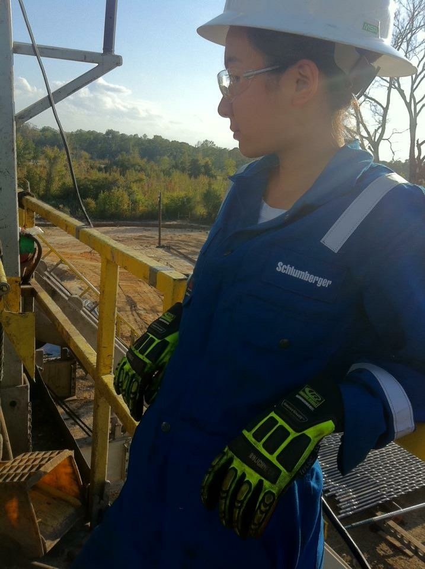

About
I build the systems behind better decisions: trusted data, AI-enabled products, and operating models that help complex organizations reduce rework and scale with confidence.
Currently, I lead Data Governance for Walmart Last Mile Delivery, building the standards, ownership, and data-quality practices behind a large-scale Driver and delivery network. I work across Product, Engineering, Operations, Finance, Legal, and Compliance to establish the practices that make critical data trusted, usable, and fit for the business decisions that depend on it.
Previously, at Amazon Global Logistics, I built data platforms and ML-enabled automation supporting global financial operations — from billing and financial governance to customer-facing agentic AI experiences. Before Amazon, I completed Fortive's Leadership Development Program, rotating through corporate systems, hardware new-product introduction, and SaaS Product Management.
I began my career as an electrical engineer and spent two years running drilling operations as a field engineer at Schlumberger — where I learned that good data, operating discipline, and sound judgment matter most when the work is real and the consequences are immediate.
I hold an MBA from INSEAD and a degree in Engineering Science from the University of Toronto.
Outside of work, I have built two early-stage consumer brands from the ground up, earned my Private Pilot License in 2025, and spend as much time as possible flying, traveling in our Airstream, hiking, and trying to keep up with Hera, my Border Collie.
Experience
Product and data leadership across enterprise logistics, hardware, and SaaS.
-
Walmart Last Mile Delivery
Building the data foundations behind a large-scale Driver and delivery network — defining the standards, ownership, and quality practices that make critical data trusted and usable across Product, Engineering, Operations, Finance, Legal, and Compliance.
-
Amazon Global Logistics
Built data platforms and ML-enabled automation for global financial operations, spanning billing, operational decision support, and customer-facing agentic AI experiences.
-
Fortive Corporation
Completed a four-rotation Leadership Development Program across corporate systems, hardware new-product introduction, and SaaS Product Management — building a broad view of how products move from strategy to execution.
-
Earlier career

Started in field engineering on oil and gas drilling operations, then moved through field operations and product marketing before transitioning fully into Product Management.
Ventures
Two consumer brands built from zero to launch—product selection, sourcing, branding, operations, and selling directly to customers.


Adventures
The non-work side of the résumé: flying, road trips, big landscapes, and a Border Collie who comes along for most of it.
-
Flying
-
Airstream & Hera
In 2024, we took our Airstream up and down the West Coast and adopted Hera, our Border Collie, along the way. She has been part of most adventures since.
Archive
Notes, projects, travel stories, and deeper dives behind the work and adventures above.
-
Full story
The long version of About.
-
Career timeline
The full Work page.
-
Travel notes
City guides and trip write-ups.
You can also find an earlier version of this site here.
Get in touch
Always happy to talk product, data, AI, aviation, or where to find the best hot pot in whatever city you're in. Drop a note below and I'll get back to you.